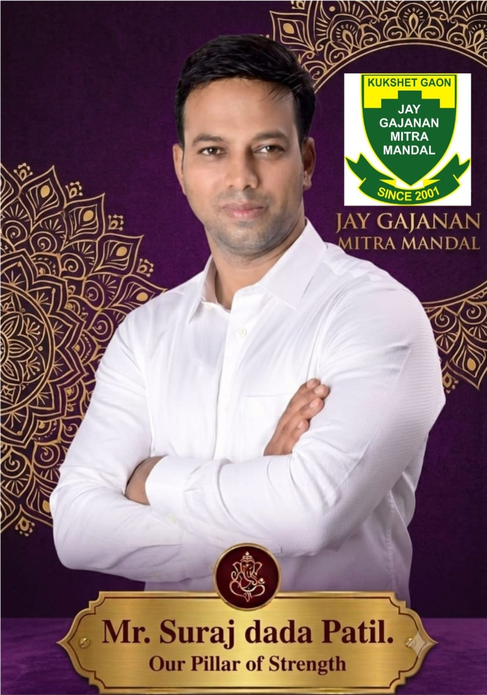
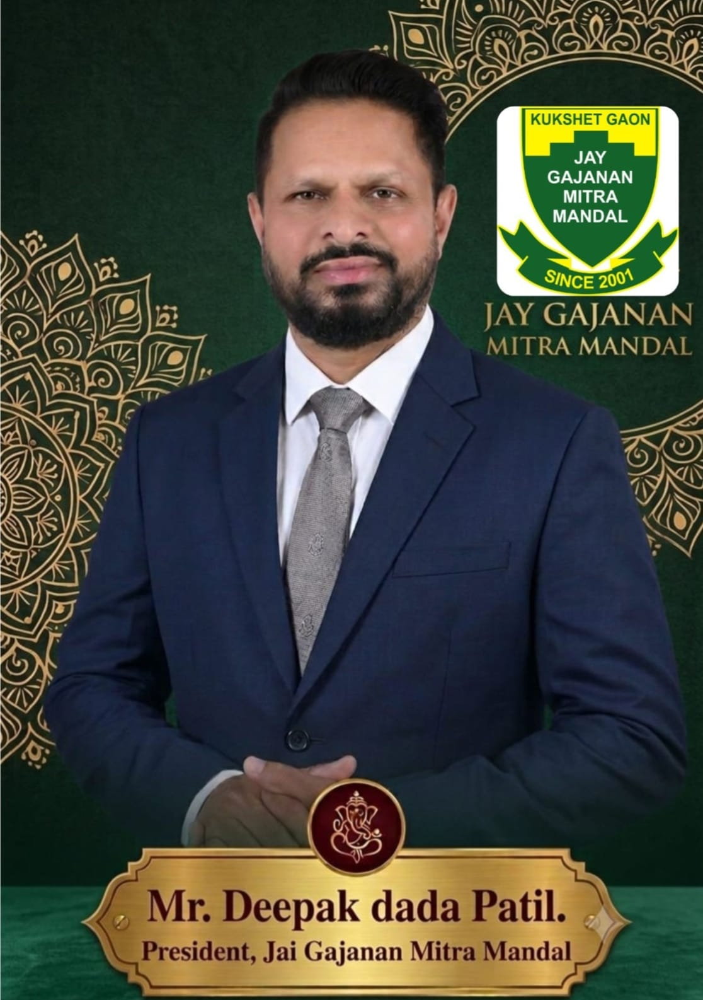

Welcome to Be More Fit Gym
Welcome to Be More Fit Gym, where community well-being takes precedence over commercial gain.
Be More Fit Gym is proudly managed by the Jai Gajanan Mitra Mandal, a dedicated social organization founded by the villagers of Kukshet Gaon.
Driven by a commitment to the community rather than the bottom line, we operate strictly on a no-profit, no-loss basis. Our primary goal is to make comprehensive health, strength, and holistic wellness accessible to everyone.
Our foundation is built on strong community values and visionary guidance. The initiative continues to move forward under the guidance of Mr. Suraj Dada Patil, whose vision and continuous support inspire our growth.
Mr. Deepak Dada Patil, the esteemed President of the organization, provides steadfast leadership and ensures that we remain true to our community-first principles.
In today's highly commercialized world, the fitness sector is often treated as a heavily invested, profit-driven business. We are dedicated to breaking this mold.
We believe that elite fitness standards should not be a luxury. With the assistance of world-class fitness experts, Be More Fit provides members with high-quality service, state-of-the-art equipment and expert guidance.
By bridging the gap between premium fitness experiences and community affordability, we aim to provide top-tier facilities and professional guidance — all at nominal rates.
Be More Fit Gym, Nerul
P11, Sector 14, Kukshet Village, Nerul (W), Navi Mumbai, Maharashtra 400706
+91 95949 18007